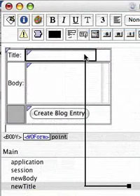

All about WebObjects
The rumors of WebObjects being “open sourced” have lead to lively discussion on the Wicket listserv. Is it something to be excited about? Worried about? Debated? (Well, yes, this is the Internet.)

I wince each time a Wicket programmer is antagonistic towards WebObjects. It’s a bit like making fun of Grandpa for repeating himself. If NeXT hadn’t made WebObjects ten years ago, we probably wouldn’t have Wicket now. Show some respect, kids!
Though I haven’t worked in WO, in this screencast it looks a lot like programming in Cocoa. You describe the interface with a visual editor, which can also traverse class hierarchies and even work with instances of objects. It’s a “tools tools tools!” approach to programming that, when overseen by a well funded and highly intelligent dictator like Apple, works very well.
The good:
- It helps you start up quickly.
- It saves time laying out interfaces.
- It’s fun.
The bad is that it’s opaque as all hell. I wrote a small application in Cocoa a few years back and when I was done I still had no idea how its interface glue worked. Apple’s system produces a load of resource files (many of them not human readable) that you’re just supposed to not care about.
The opaqueness has a side effect: it’s difficult to make components on par with Apple’s. You have to peek behind the curtain a bit to even get started. Then you have to decide how much time you want to spend coding for the interface builder so that it can accurately preview your component. Not much, probably, so you’re left with a whole lot of whitespace.
While my experience is in Cocoa, the same issues arise when connecting HTML to Java. You’re always going to be reaching for the polished built-in component instead of the one you made yourself. Except it’s worse, because while Apple is in complete control of interface styles in Mac OS X, they can’t control trends on the Web.
Their HTML builder cranks out code like <HTML><BODY><TABLE>. How do I put this nicely for Grandpa? Sir, we stopped using caps-lock for tags in 2001. And tables for layout in 2003. What’s that? Oh, the bathroom is right down the hall…
That’s the way things usually go when Apple’s attention wavers, and now they’ve quit toying and just pulled the plug on WO development tools. You’re left with something called WOLips, which is probably about as sophisticated as it sounds.
It’s surprising if WebObjects programmers are taking these recent changes as good news. Apple may be saying “open source,” but what they mean is “sayounara.” They aren’t going to release the source to the deprecated tools (which are deeply intertwined with XCode); they’re going to unload the WO engine source so the whole thing will be out of their hands.
I’m sure the community-made Eclipse plugins don’t feel so out of date, but I’m just as sure they don’t (and won’t) approach the slickness of Apple’s tools. No one working for free is going to code a laser beam effect for connecting components to code. (Consider that a challenge.)
I wish them the best anyway, and I’ll always be grateful to WebObjects for its ground-breaking in Web component programming. But I don’t see it going anywhere terribly interesting without Apple’s help. (I always hoped for a scandalous return to Objective-C.)
Now, where did my HyperCard stack blow off to?
Codercomments
So, Wicket looks very interesting, but I still have one question. Seeing as how you are obviously familiar with the most excellent WebObjects framework, what I don’t get is why do you have to configure your components in Java code? WebObjects allowed you to just do this kinda thing:
CategoryPopUp: WOPopUpList { list = anObject.aList; item = anItem; selected = theSelectedThing; }
This was before God commanded that all configuration must be in XML so the binding files were actually readable. And of course Tapestry allows you do something similar although with XML and/or annotations. IMHO, the above is more readable than the wicket style of putting all that stuff in Java code, especially when you have a big page with lots of components on it. I’ve been developing with WebObjects for 10 years and I’ve never had a problem. Of course, WebObjects Builder was nice in that you never had to actually edit this files by hand, but even before it’s introduction, this wasn’t a problem.
Thanks.
Thanks for your comments, Michael. The declaration snippet you provided looks nice and compact, much better than XML (or annotations).
In Wicket, we do think that Java is good for initializing a component hierarchy. Much of the API supports chaining, as in:
add(new RenderedLabel("text") .setFont(spidershank) .setColor(Color.GRAY));While all of that could be declared externally in some non-programming language, many components need custom behavior that can not simply be declared. We see an advantage for Wicket here, that our components and their behavior are described in two places instead of three. When the custom behavior is needed in one page only, we just anonymously subclass its already-Java component declaration.
If you’re interested in Wicket and want to skim through example code, there’s a fair bit in the “Databinder examples”:http://databinder.net/examples.html.
Sure, in some ways it’s six of one, half a dozen of the other. The one problem I see with Wicket’s approach is that it doesn’t (easily) support the use of tools like WebObjects Builder (which you’ve got a screenshot of above) for defining components and bindings. And of course, using something like OGNL, you can embed almost anything in a binding expression that you can express in Java. However, I suppose if one wanted to add this to wicket it would take all of a day to write a few extra classes to parse something like:
text: RenderedLabel font=spidershank; color=Color.GRAY;or
or some variation and turn it into the method calls in your code at runtime.
What I’d like to have instead of a builder is a run-time error screen (HTML+JavaScript) that lets me visually connect orphans in the component hierarchy to elements in the DOM. It would produce an updated HTML template with new or corrected
wicket:idattributes, which you would then save or c&p to the right place. That’s all possible, but would obviously be a lot of work!Wicket used OGNL in the past for interpreted component IDs but determined that it was a drag on performance. As you suggest, it would be easy to write a WebPage subclass that parses a component descriptor to build its component hierarchy. But by the time people have learned Wicket, they’re sold on the idea that doing it in Java is better. (Or they go back to learning Tapestry.)
Add a comment